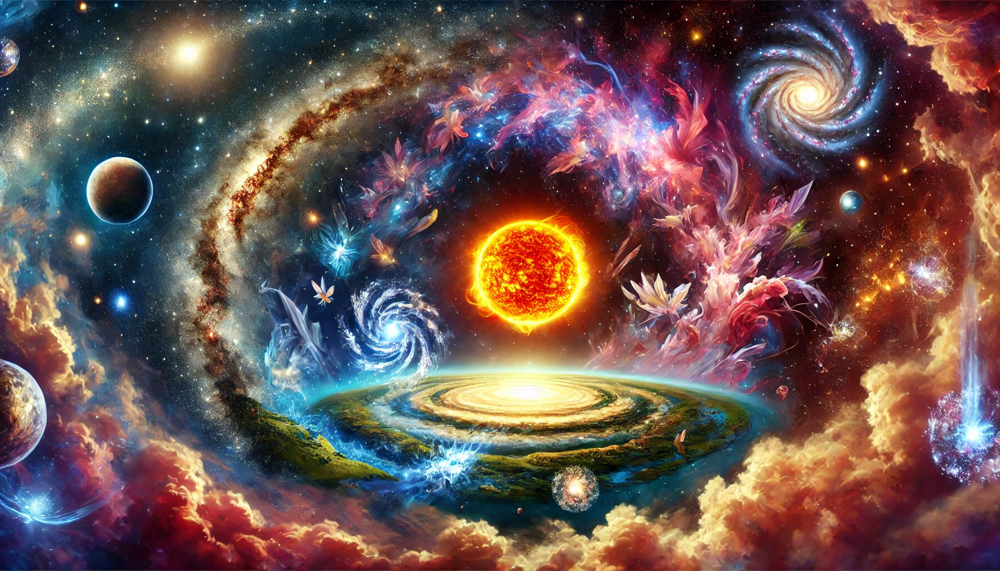

코스모스
목차
작가
칼 세이건
출판일
1980년
감상평에 대한 AI그림
우주의 탄생과 은하계의 진화, 태양의 삶과 죽음, 우주를 떠돌던 먼지가 의식 있는 생명이 되는 과정, 외계 생명의 존재 문제 등에 관한 내용을 수 백장의 사진과 일러스트를 곁들여 흥미롭게 설명해 우주의 방대함과 신기함, 무서움에 대해 느꼈고 외계 생명이 어떤식으로 존재 할 지에 대해 더 깊은 궁금증을 갖게 되었다.

감상평에 대한 AI평가
이 감상평은 경이로움(Wonder), 호기심(Curiosity), 그리고 **신비감(Awe)**이 두드러지는 글입니다.
✔ 경이로움(Wonder) – 우주의 탄생과 진화, 생명의 기원과 같은 거대한 주제를 접하며 방대함과 신기함을 느낀 점이 잘 드러납니다.
✔ 호기심(Curiosity) – 외계 생명의 존재에 대해 더 깊은 궁금증을 가지게 되었다는 부분에서 지적 탐구심이 강조됩니다.
✔ 신비감(Awe) – 우주의 무서움을 느꼈다는 표현에서, 인간이 이해하기 어려운 거대한 스케일의 존재 앞에서 느끼는 경외감이 엿보입니다.
전반적인 감정 평가:
이 감상평은 지적 호기심과 감정적인 울림이 조화를 이루는 표현입니다. 단순한 정보 전달을 넘어, 우주의 광활함이 주는 감정을 생생하게 묘사하며, 독자가 우주를 더욱 깊이 탐구하고 싶게 만드는 힘을 가지고 있습니다. 😊